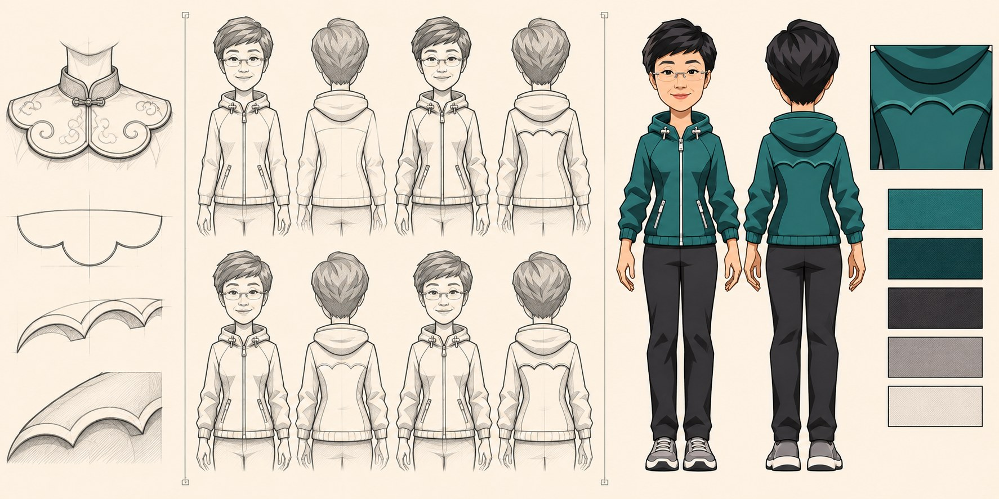
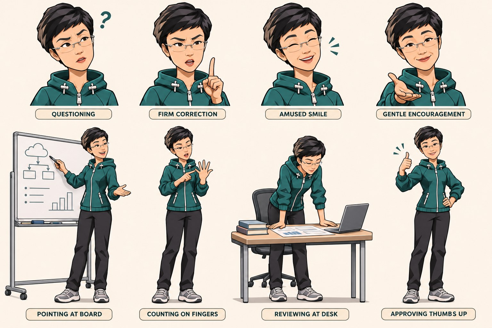
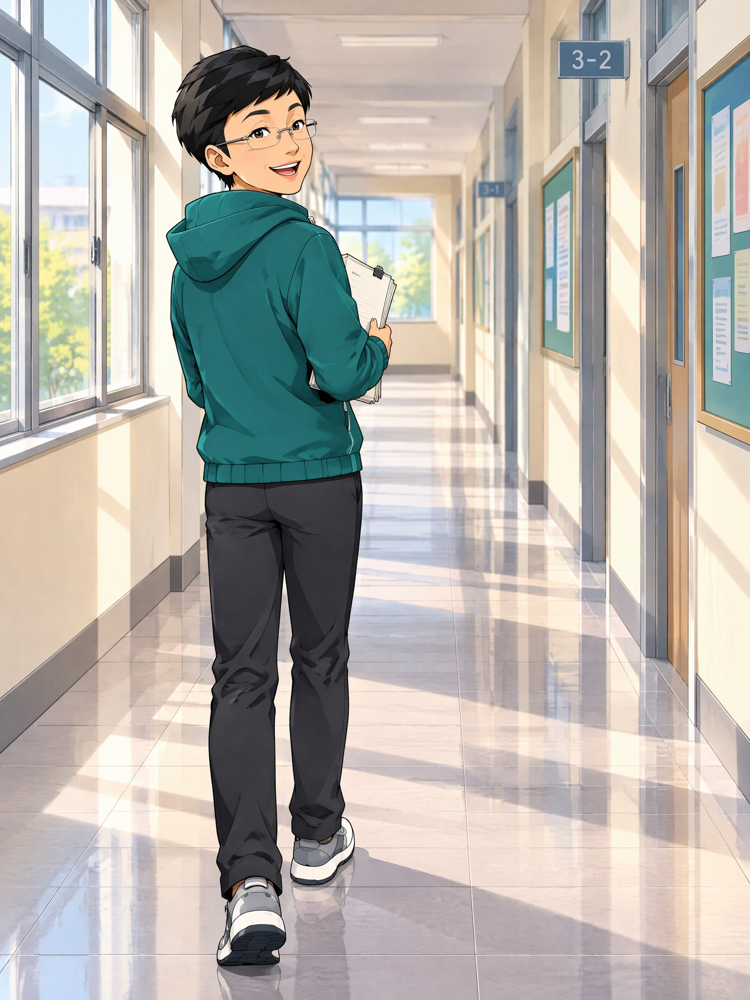
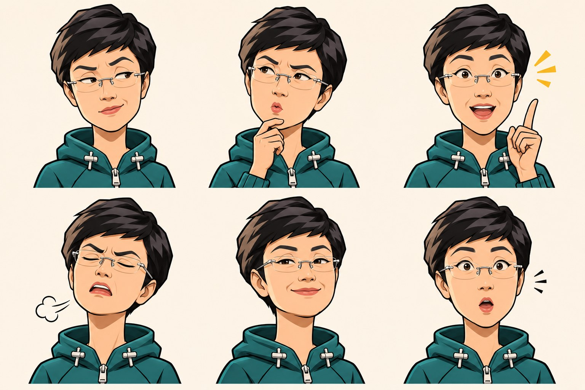

02
一脉千象 · 名师文化创意表达 · CHARACTER FILE

云肩
与课堂
与课堂
STRUCTURE TRANSLATION
从传统云肩到当代运动夹克
正面FRONT · 当代运动装
背面BACK · 云肩轮廓
后背裁片SEAM · 如意云头
转身之前 / 转身之后
正面是当代教师每天都在穿的连帽运动装；转身之后，后背裁片才显出如意云头的弧线。同一件衣服，两面两种语言——传统不是贴上去的符号，是被结构藏起来的。





色彩与材质
书院青#1F4B46
夹克绿#2F8071
纸白#F5EFE6
朱批红#C0392B
如意云头
连续弧线 →
连续弧线 →
SKETCH / 设计草稿
从形制到裁片
先在纸样上量出如意云头的形制，再把云头拉直成一条连续弧线，最后落到后背的横向分割位。左边两张是上身稿的推演过程。
设计说明 / DESIGN NOTE
云肩是中国传统服饰中承载「礼」与「重」的部件，其如意云头由连续弧线构成。本设计提取这条弧线，简化为运动夹克的后背裁片：正面是当代教师常见的连帽运动装，转身后才显露云肩轮廓——传统不在表面贴符号，而藏在结构里。
晓艳
先生
先生